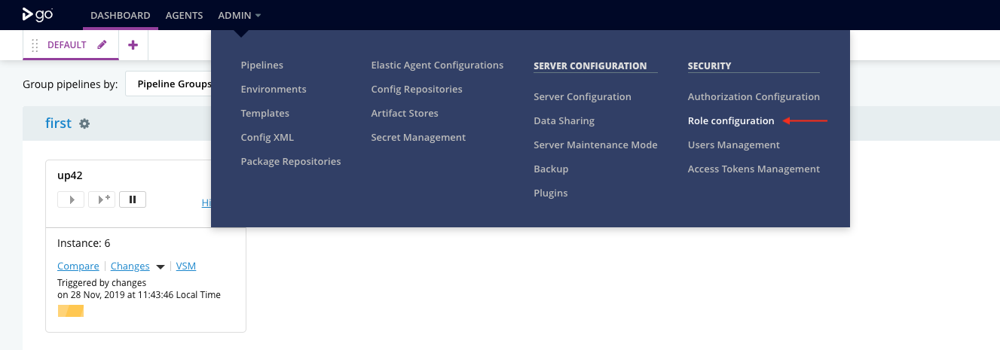

Policy
A policy is a set of permissions for GoCD entities such as environments, configuration repositories, etc. The policy defines the access of a GoCD entity for the users in a role. GoCD supports a restrictive model of access i.e. until access is granted, the entity can’t be accessed by anyone (except admins).
A permission consists of 3 values:
- Type: The type of GoCD entity. Supported values are
environment, config_repo, cluster_profile, elastic_agent_profile. Wildcard(*) is also permitted which means all supported values. - Action: The action which is controlled. Supported values are
viewandadminister - Resource: The resource can be the name of entity or a pattern consisting of wildcard (
*) matching one or more entities and can optionally be namespaced within parent entity using:separator.
Currently, GoCD has 2 types of permissions:
- Allow: The allow permission grants access to the specified entity for the specific action.
- Deny: The deny permission restricts the access to the specified entity for the specific action.
Note: If both the permission are specified for the same entity, the
denypermission takes precendence.
Privilege-Action Matrix
Each GoCD entity has a set of actions which grants/restricts control on a granular level. The following matrix describes the same.
Environment
-
API
Index Get Create Update Patch Delete View ✔ ✔ ✘ ✘ ✘ ✘ Administer ✔ ✔ ✔ ✔ ✔ ✔ -
UI
List Create Update Delete View ✔ ✘ ✘ ✘ Administer ✔ ✔ ✔ ✔
Config Repo
-
API
Index Get Create Update Delete View ✔ ✔ ✘ ✘ ✘ Administer ✔ ✔ ✔ ✔ ✔ -
UI
List Create Refresh Update Delete View ✔ ✘ ✘ ✘ ✘ Administer ✔ ✔ ✔ ✔ ✔
Elastic Agent Configuration
GoCD supports dynamic provisioning of agents using Elastic Agents. To Configure an elastic agent in GoCD, a user is required to configure Cluster Profiles and Elastic Agent Profiles.
In most cases, a single GoCD instance is being utilized by multiple teams. Each team can have their own build environments e.g. development, staging, production, etc. Where each build environment is mapped to a cluster profile. And the type and the configurations of the agent is specified as an elastic agent profile.
As Cluster Profiles and Elastic Agent Profiles are inter-dependent, a specific permission policy can be specified to provide granular access as per teams.
Basic Permissions
Cluster Profile
-
API
Index Get Create Update Delete View ✔ ✔ ✘ ✘ ✘ Administer ✔ ✔ ✔ ✔ ✔ -
UI
List Create Update Delete Cluster Status Report View ✔ ✘ ✘ ✘ ✔ Administer ✔ ✔ ✔ ✔ ✔
Elastic Agent Profile
-
API
Index Get Create Update Delete View ✔ ✔ ✘ ✘ ✘ Administer ✔ ✔ ✔ ✔ ✔ -
UI
List Create Update Delete Agent Status Report Elastic Profiles Usage View ✔ ✘ ✘ ✘ ✔ ✔ Administer ✔ ✔ ✔ ✔ ✔ ✔
Implicit Permission
-
Any permission on the Cluster profile is implicitly applied to all the Elastic Agent Profiles of the same cluster.
Example:
<cruise> <roles> <role name="frontend_team"> <users> <user>Bob</user> </users> <policy> <allow action="administer" type="cluster_profile">frontend_team_uat_cluster</allow> </policy> </role> </roles> <elastic> <agentProfiles> <agentProfile id="node6-agent" clusterProfileId="frontend_team_uat_cluster"/> <agentProfile id="node8-agent" clusterProfileId="frontend_team_uat_cluster"/> </agentProfiles> <clusterProfiles> <clusterProfile id="frontend_team_uat_cluster" pluginId="cd.go.contrib.docker"/> </clusterProfiles> </elastic> </cruise>In the give role, The user
Bobhas given administrative access on thefrontend_team_uat_clustercluster. With implicit permissions, the userBobis allowed to administerfrontend_team_uat_clustercluster profile andnode6-agent,node8-agentelastic agent profiles. -
Any permission on the Elastic Agent profile provides the view permission to the associated Cluster Profile.
Example:
<cruise> <roles> <role name="frontend_team"> <users> <user>Bob</user> </users> <policy> <allow action="administer" type="elastic_agent_profile">node6-agent</allow> </policy> </role> </roles> <elastic> <agentProfiles> <agentProfile id="node6-agent" clusterProfileId="frontend_team_uat_cluster"/> </agentProfiles> <clusterProfiles> <clusterProfile id="frontend_team_uat_cluster" pluginId="cd.go.contrib.docker"/> </clusterProfiles> </elastic> </cruise>In the give role, The user
Bobhas given administrative access on thenode6-agentelastic agent profile. With implicit permissions, the userBobis allowed to administernode6-agentelastic agent profile and is also able to viewfrontend_team_uat_clustercluster profile.
Namespaced Permission
In a distributed teams setup, along with granting permissions to create GoCD entities, we often want to restrict users from performing certain operations. Within namespaced resource permissions we can restrict user permissions to a particular entity.
Namespaced resource permissions can be specified using colon (:) separator. Example: parent_entity:child_entity.
This would enforce the given user has access to operate on child_entity only within parent_entity.
While creating elastic agent configurations we often to restrict users to to their team’s cluster profiles and elastic profiles. Following is the example which demonstrates permission restrictions using namespaced resource as per teams.
<roles>
<role name="frontend_team">
<users>
<user>Bob</user>
</users>
<policy>
<allow action="administer" type="elastic_agent_profiles">frontend_*:*</allow>
</policy>
</role>
<role name="backend_team">
<users>
<user>John</user>
</users>
<policy>
<allow action="administer" type="elastic_agent_profiles">backend_*:*</allow>
</policy>
</role>
<role name="devops_team">
<users>
<user>Admin</user>
</users>
<policy>
<allow action="administer" type="elastic_agent_profiles">*:*</allow>
</policy>
</role>
</roles>
In the given example:
- As part of role
frontend_team, the userBobhas given administrative access on all the Elastic agent profiles which refers to thefrontend_*cluster profile(s). - As part of role
backend_team, the userJohnhas given administrative access on all the Elastic agent profiles which refers to thebackend_*cluster profile(s). - As part of role
devops_team, the userAdminhas given administrative access on all the Elastic agent profiles. This can also be achieved specifying*as resource.
Configure policy
-
Login into your GoCD server.
-
Go to Admin menu → Role Configuration.

-
Click on
Addbutton.
-
Enter a unique name for role configuration.
-
Click on
Add Permissionbutton.
-
Select permission as
Allow, type asEnvironment, action asView. Enterresourcevalue as*. This will grant view permission for all environments to the users which has this role.
-
Click on
Savebutton.
Once the role has been created, go ahead and add users to the same. The access to the GoCD entities for these users will governed as per permissions configured.
 Suggest edits to this page
Suggest edits to this page